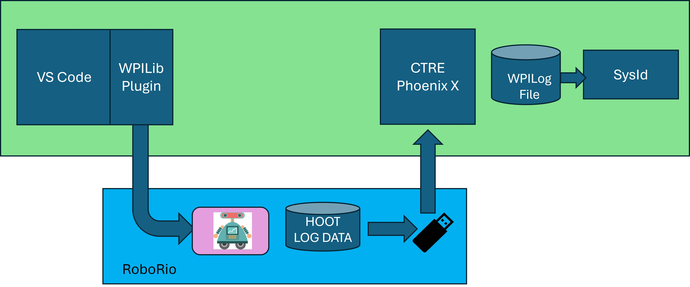
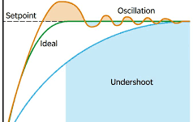

SysID PID Tuning
The alternative to manual PID Tuning which is iterative and time-consuming, Tuning with a system-based approach (such as WPILib SysID) offers more accurate and faster results. However, getting to the PID values using a tool takes a lot of preperation. The general idea is to run the system to be tuned with very specific test algorithms and log the results. This log data is input into an analysis tool (SysID) and the results evaluated. The propoer PID values are the result of this evaluation.
What is System Identification?
In Control Theory, system identification is the process of determining a mathematical model for the behavior of a system through statistical analysis of its inputs and outputs.
This model is a rule describing how input voltage affects the way our measurements (typically encoder data) evolve in time. A “system identification” routine takes such a model and a dataset and attempts to fit parameters which would make your model most closely-match the dataset. Generally, the model is not perfect - the real-world data are polluted by both measurement noise (e.g. timing errors, encoder resolution limitations) and system noise (unmodeled forces acting on the system, like vibrations). However, even an imperfect model is usually “good enough” to give us accurate feedforward control of the mechanism, and even to estimate optimal gains for feedback control.
The WPILib System Identification Tool (SysId)

The WPILib system identification tool consists of the SysId application that runs on the user’s PC and a routine that lives in the code running on the user’s robot. The routine will generate control signals which user-defined callbacks will send to the motors being characterized, while the robot records data into a log file. After the routine completes, the user will retrieve this file from the roboRIO and load it into SysId. SysId then processes the data and determines model parameters for the user’s robot mechanism, as well as producing diagnostic plots.
The System Identification toolsuite currently supports:
Simple Motor Setup
Elevators
Arms
Types of Tests
A standard motor identification routine consists of two types of tests:
Quasistatic: In this test, the mechanism is gradually sped-up such that the voltage corresponding to acceleration is negligible (hence, “as if static”).
Dynamic: In this test, a constant ‘step voltage’ is given to the mechanism, so that the behavior while accelerating can be determined.
Each test type is run both forwards and backwards, for four tests in total. The tests can be run in any order, but running a “backwards” test directly after a “forwards” test is generally advisable (as it will more or less reset the mechanism to its original position). SysIdRoutine provides command factories that may be used to run the tests. The user code-based workflow enables teams to use mechanism code they already know works, including soft and hard limits.
Team 930
PID CONTROLLER Proportional, Integral, Derivative

(orange is before characterization and the green is after)
For PID we focus on the P and when there is oscillation D brings the oscillating down and stops the over correcting
Getting PID from SysID When using SysID, you have 4 auto options for characterization and tuning: Quasistatic Forward & Backward, and Dynamic Forward & Backward. It is recommended to map these to buttons on a controller (temporarily):
controller.back().and(controller.y()).whileTrue(drive.sysIdDynamic(Direction.kForward));
controller.back().and(controller.x()).whileTrue(drive.sysIdDynamic(Direction.kReverse));
controller.start().and(controller.y()).whileTrue(drive.sysIdQuasistatic(Direction.kForward));
controller.start().and(controller.x()).whileTrue(drive.sysIdQuasistatic(Direction.kReverse));
Typically use a USB drive in the RoboRio for logging. After running all four of these tests, it will log the values in the latest WpiLog under /logs/.
You can use the SysID tool included in AdvantageKit to open the WpiLog.
In the top left window, click [Open data log file…] and open your .wpilog.
With this WpiLog open, you need to set the Test State (bottom left window). Drag from the top left window, usually under RealOutputs/Drive/SysIdState.
Change the analysis type to simple
Drag one of the modules” values for Velocity, Position, and Voltage to the empty fields.
Set the units to Radians (if not using hoot), then click «load».
Once loaded, the calculated values will appear in the center, and graphs on the right will reflect the data. On the diagnostic plots, for all of the R2 values, aim to get them as close to 1.0 as possible, by running longer characterization sessions.
.hoot x SysID It is recommended to use .hoot files to record the SysIDs, as .hoot files are way lighter and easier to use once set up. Use SignalLogger to log the session (and the characterization) to a .hoot file. You need to use the SignalLogger to log .hoot files.
At the start of the session:
SignalLogger.setPath(«/media/sda1/»); // Or whatever path we want to log to
SignalLogger.start();
At the end of the session:
SignalLogger.stop();
It is recommended to place the start in a TeleopInit method or otherwise, and to place the stop in a DisabledInit method, so it only logs the enabled session. To make sure that the SysIdState is logged to the hoot, change the definition of the SysIDRoutine (usually in Drive.java) to use:
(state) -> Logger.recordOutput(«Drive/SysIdState», state.toString())),
Turns into:
(state) -> SignalLogger.writeString(«state», state.toString())),
Then, use Phoenix Tuner X (after running Characterization) to download the .hoots, and to convert them to .wpilog files. You can load these into the SysId tool and use them like before,but instead of using modules, you will need to find the IDs of the drive motors and look at those. You will also need to change the units to Rotations.
- ADJUSTING PID
Set P to 1 and increase until the wheels start oscillating
Then you will increase D until it stops oscillating
What this does is P gets it to the set point and D
References
Team 930 - Getting PID Values from SysID